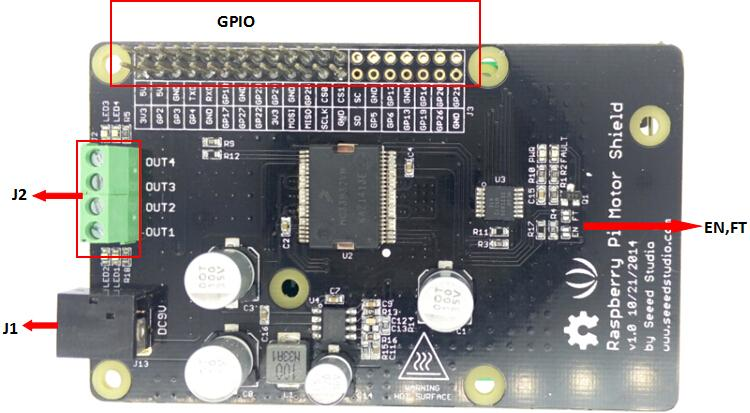
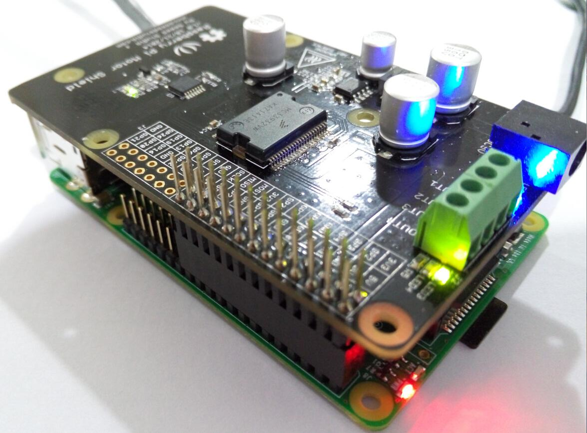
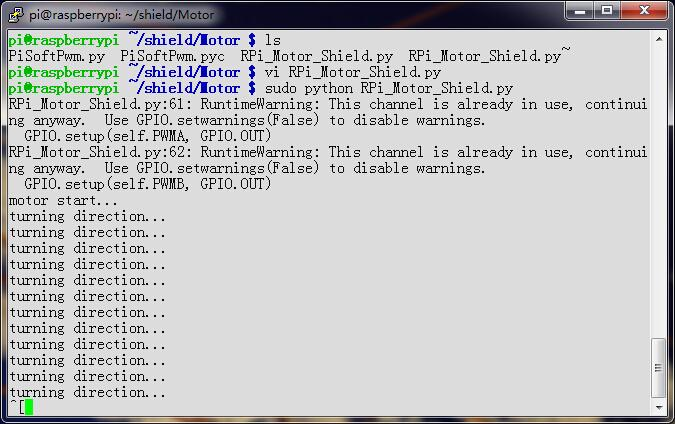
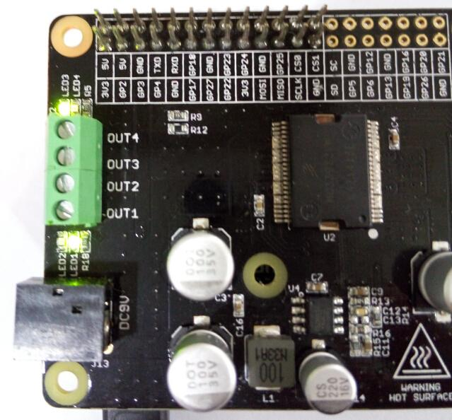

Raspberry Pi Motor Driver Board v1.0 is based on the Freescale MC33932 dual H-Bridge Power IC, which can control inductive loads with currents up to 5.0A peak per single bridge. It lets you drive two DC motors with your Raspberry Pi B/B+/A+ and Pi 2 Model B, controlling the speed and direction of each one independently.
Raspberry Pi Motor Driver Board v1.0 support a very wide range of input voltage from 6V~28V.
otherwise ,the on board DC/DC converter support a very wide range of input voltage, and can provide a 5V power supply for the Raspberry Pi with 1000mA maximum current. So, you just need one power supply to drive the motors and power up the Raspberry Pi.
| Item | Min | Typical | Max | Unit |
|---|---|---|---|---|
| Operating Voltage | 6 | / | 28 | VDC |
| DC/DC output: | / | 5V/1000mA | / | |
| Output Current(For Each Channel ) | / | 2 (continuous operation) | 5 (peak) | A |
| PWM Frequency | / | / | 11 | kHz |
| Output Duty Range | 0 | / | 100 | % |
| Logic Input Voltage | -0.3 | / | 7 | V |
| Operating Temperature | -40 | / | 120 | ℃ |
| Dimension | 91.20 * 56.15*32 | mm | ||

Do not touch the H-bridge IC or PCB board during working. Its temperature can reach up to 100 degrees in the case of full load operating.
This demo is using Raspberry Pi B to show that Raspberry Pi Motor Driver Board v1.0 be use to control DC motor forward and backward.
connect to network and power

#!/usr/bin/python
import RPi.GPIO as GPIO
import time
import signal
from PiSoftPwm import *
#print 'Go_1...'
#frequency = 1.0 / self.sc_1.GetValue()
#speed = self.sc_2.GetValue()
class Motor():
def __init__(self):
# MC33932 pins
self.PWMA = 25
self.PWMB = 22
self._IN1 = 23
self._IN2 = 24
self._IN3 = 17
self._IN4 = 27
# Initialize PWMA PWMB
GPIO.setmode(GPIO.BCM)
GPIO.setup(self.PWMA, GPIO.OUT)
GPIO.setup(self.PWMB, GPIO.OUT)
GPIO.output(self.PWMA, True)
GPIO.output(self.PWMB, True)
# Initialize PWM outputs
self.OUT_1 = PiSoftPwm(0.1, 100, self._IN1, GPIO.BCM)
self.OUT_2 = PiSoftPwm(0.1, 100, self._IN2, GPIO.BCM)
self.OUT_3 = PiSoftPwm(0.1, 100, self._IN3, GPIO.BCM)
self.OUT_4 = PiSoftPwm(0.1, 100, self._IN4, GPIO.BCM)
# Close pwm output
self.OUT_1.start(0)
self.OUT_2.start(0)
self.OUT_3.start(0)
self.OUT_4.start(0)
self.frequency = 0.01
self.duty = 60
def Setting(self, frequency, duty):
self.frequency = frequency
self.duty = duty
def Go_1(self):
self.OUT_1.changeBaseTime(self.frequency)
self.OUT_2.changeBaseTime(self.frequency)
self.OUT_1.changeNbSlicesOn(self.duty)
self.OUT_2.changeNbSlicesOn(0)
def Back_1(self):
self.OUT_1.changeBaseTime(self.frequency)
self.OUT_2.changeBaseTime(self.frequency)
self.OUT_1.changeNbSlicesOn(0)
self.OUT_2.changeNbSlicesOn(self.duty)
def Go_2(self):
self.OUT_3.changeBaseTime(self.frequency)
self.OUT_4.changeBaseTime(self.frequency)
self.OUT_3.changeNbSlicesOn(0)
self.OUT_4.changeNbSlicesOn(self.duty)
def Back_2(self):
self.OUT_3.changeBaseTime(self.frequency)
self.OUT_4.changeBaseTime(self.frequency)
self.OUT_3.changeNbSlicesOn(self.duty)
self.OUT_4.changeNbSlicesOn(0)
def Stop():
self.OUT_1.changeNbSlicesOn(0)
self.OUT_2.changeNbSlicesOn(0)
self.OUT_3.changeNbSlicesOn(0)
self.OUT_4.changeNbSlicesOn(0)
if __name__=="__main__":
motor=Motor()
# Called on process interruption. Set all pins to "Input" default mode.
def endProcess(signalnum = None, handler = None):
motor.OUT_1.stop()
motor.OUT_2.stop()
motor.OUT_3.stop()
motor.OUT_4.stop()
motor.GPIO.cleanup()
exit(0)
# Prepare handlers for process exit
signal.signal(signal.SIGTERM, endProcess)
signal.signal(signal.SIGINT, endProcess)
signal.signal(signal.SIGHUP, endProcess)
signal.signal (signal.SIGQUIT, endProcess)
motor.Setting(0.01, 60)
print 'motor start...'
while True:
print 'turning direction...'
motor.Go_1()
time.sleep(1)
motor.Back_1()
time.sleep(1)
motor.Go_2()
time.sleep(1)
motor.Back_2()
time.sleep(1)
it means Out 1 and Out 2(Out 3 and Out 4) connect Motor A(B) forward and back.
serial console:

Raspberry Pi Motor Driver Board v1.0:
Green LED and Blue LED alternate lights up
